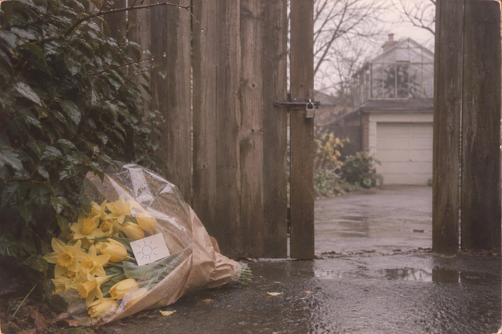

Отклонено

Курт
Стало тихо. Я думал, что после этого не будет ничего: ни тишины, ни шума, ни того, кто мог бы отличить одно от другого. Но я стою в комнате над гаражом, и за стеклом продолжается вторник.
Комната небольшая. Вдоль двух стен тянутся столы для рассады, на них горшки с землёй, в которой ничего не растёт. У прежних хозяев здесь была оранжерея, мы хотели сделать мастерскую и так и не собрались. Дверей две, обе стеклянные, на две створки. Западная выходит на деревянную площадку и лестницу. Восточная выходит на узкий балкон, и если встать у неё, видно мокрые ветки, чужую крышу и между ними полосу озера, серую, как дно алюминиевой кастрюли.
Я берусь за ручку. Ничего не происходит. Ручка не холодная и не тёплая, она никакая, как вещь на фотографии.
На полу лежит то, на что я не смотрю. Я знаю, что оно там, и знаю, что это я. Поэтому я смотрю в окно.
Под вечер в доме загорается свет на кухне. Там сейчас живёт мой друг. Он помогает нам с дочкой, но дочка с матерью в Лос-Анджелесе, и он остался здесь один, сторожить дом и ждать меня. Он ставит чайник, потом садится у телефона и держит трубку, никуда не звоня. Наверное, ждёт, что позвоню я.
Я стучу в стекло. Звука нет. Я стучу сильнее и вижу свою руку, но стекло её не замечает, так же как ручка.
Всю ночь я стою у двери. Оказывается, чтобы спать, тоже нужно тело.
⁂
Терри
Весной девяносто четвёртого я работал в цветочном магазине на Пятнадцатой авеню, на Капитолийском холме. Хозяйку звали миссис Хеффернан. Она носила очки на цепочке, курила тонкие сигареты у задней двери и называла меня «молодой человек», хотя я к тому времени уже отслужил в армии и вернулся домой.
У магазина был договор с тремя гостиницами в центре. По пятницам к семи утра в их вестибюлях должны были стоять свежие букеты, высокие, в напольных вазах, и делать их приходилось ночью, чтобы цветы не успели устать. Ночная смена была моя. Мне платили шесть долларов в час, на доллар больше минимальной ставки, и я этим гордился.
Седьмого апреля, в четверг, я приехал к десяти вечера. Шёл дождь, мелкий, такой, какой в Сиэтле идёт так долго, что его перестаёшь замечать. Миссис Хеффернан оставила на прилавке записку: лилии в холодильнике, гладиолусы на полу, эвкалипт не жалей, ключ от фургона под кассой. Я включил радио, налил кофе из термоса и взялся за ножницы.
Радио было настроено на станцию, которую слушала её дочь, она работала у нас днём. Там играли то, что тогда играли везде, громкое, с хриплым голосом. Я в этом не разбирался. Я вырос на отцовских пластинках и любил, когда в песне понятно, кто от кого ушёл и почему. Между песнями диктор сказал, что группа отказалась выступать летом на большом фестивале, а её певца уже неделю не могут найти. Он сказал это тем же голосом, каким говорят про снег на перевале, и поставил следующую песню.
Стебли надо резать под водой и наискосок, иначе в них попадает воздух и цветок не пьёт. Этому меня научила миссис Хеффернан в первый же день. Я стоял над ведром и резал, вода была ледяная, и к полуночи я перестал чувствовать пальцы. К часу ночи два вестибюля из трёх были готовы. Я выключил радио, потому что под него хотелось спать.
⁂
Курт
В среду утром дверь мне больше не нужна. Я не знаю, как это вышло. Я стоял у стекла, а потом оказываюсь на площадке, на мокрых досках, и холода не чувствую.
Я иду в дом. Друг спит наверху, на животе, не раздеваясь. На кухонных часах семь. На стене висит телефон. Я снимаю трубку, и у меня получается. Не знаю почему. Может быть, телефон легче дверной ручки. А может быть, ему самому нужно, чтобы по нему звонили.
Я набираю номер, который столько раз видел по телевизору, что он запомнился сам: перевод денег по телефону, с карточки, в любой город, и к переводу можно приложить несколько слов. Деньги я хочу послать другу, с которым мы знакомы с юности. Его позовут в контору и прочитают ему записку. Записка будет из двух слов: «Над гаражом».
Девушка на том конце спрашивает номер карты, и я диктую его наизусть. Я называю сумму, полторы тысячи. Не знаю, почему столько. Наверное, хочу, чтобы такие деньги нельзя было не заметить. Она считает сбор и говорит: тысяча пятьсот семнадцать долларов пятьдесят шесть центов. Просит подождать. Потом говорит, что в операции отказано, и спрашивает, есть ли у меня карта под рукой. Я говорю, что нет. Она говорит, что так и отметит: карта не предъявлена. Я смотрю на свои руки. Карты в них нет.
Потом я иду в парк. Он сразу за изгородью, маленький, спускается к бульвару газоном и дорожкой. На верхней площадке стоят скамейки. Я сажусь на одну. На мне та же куртка, в которой я был, толстая, на подкладке, и шапка. Я и раньше носил всё это не по погоде. Мне всегда было холодно.
Мимо идёт женщина с собакой. Собака останавливается и смотрит на меня, и шерсть у неё на загривке поднимается. Женщина тянет поводок и сама не смотрит. Потом всё-таки оборачивается. Она видит худого человека в зимней куртке на мокрой скамейке и отводит глаза, как отводят от больного. Я встаю, чтобы сказать ей, где я. Она уходит быстрее, чем шла.
К вечеру приходит старик в плаще. Он тоже меня видит. Он останавливается и спрашивает, всё ли у меня в порядке. Я говорю: нет, я в комнате над гаражом, скажите кому-нибудь. Он кивает, как кивают, когда не расслышали, и говорит, что на ночь обещали дождь. Потом идёт дальше.
Видят меня иногда. Слышат совсем редко.
⁂
Терри
В половине второго в стекло постучали.
Магазин был закрыт, на двери висела табличка, свет горел только в задней комнате и над прилавком. За стеклом стоял человек в толстой куртке и вязаной шапке, натянутой на уши. Второй раз он стучать не стал. Он стоял и смотрел на вёдра с тюльпанами у витрины.
Открывать я не имел права. Миссис Хеффернан говорила: ночью не открывай никому, даже полиции, пусть звонят мне домой. Но он был такой худой, что куртка висела на нём, как на вешалке, и я подумал, что если не открою, он так и будет стоять под дождём. Я открыл. Колокольчик над дверью не звякнул. Я тогда не обратил на это внимания: его давно надо было перевесить, он задевал косяк через раз.
Он вошёл и сказал: «Простите. Я увидел свет». Голос был тихий и сиплый, как у человека, который долго молчал или долго кричал. Он спросил, можно ли купить цветов. Я сказал, что вообще-то мы закрыты, но можно. Он кивнул и пошёл вдоль вёдер. Выбирал он не так, как выбирают покупатели: ничего не трогал и не нюхал, а у каждого ведра останавливался и подолгу смотрел.
Он взял жёлтые нарциссы и жёлтые тюльпаны. Я спросил, не добавить ли чего-нибудь другого цвета, для глаза. Он сказал: нет, пусть будут жёлтые. Я собрал большой букет, обернул бумагой и целлофаном, положил белую открытку, и с налогом вышло сорок три доллара двадцать девять центов.
Он достал из-за пазухи карточку и протянул мне. Тут я и увидел у него на запястье, под манжетой, пластиковый браслет, какие надевают в больнице, с напечатанной фамилией. Фамилию я читать не стал. Я подумал, что он ушёл из больницы без спроса, и мне стало неловко, как будто я подглядел.
Аппарат у нас был новый, миссис Хеффернан купила его осенью и очень им гордилась. Я провёл карточку, аппарат набрал номер, пощёлкал и выдал бумажную полоску. На ней было напечатано время, 01:35, сумма и одно слово: DECLINED. Отклонено.
Я сказал: «Извините, не проходит». Он сказал: «Я знаю. В понедельник тоже не прошло. Два раза». Он сказал это без обиды, так, как говорят, что в понедельник шёл дождь. «Я думал, может, сегодня».
Можно было попробовать ещё раз, но по нему было видно, что не надо. Я спросил, есть ли у него наличные. Он похлопал по карманам и сказал, что нет. Потом сказал: «Ничего. Спасибо, что открыли». И повернулся к двери, а букет остался лежать на прилавке.
Я не знаю, почему я это сделал. Сорок три доллара были тогда для меня целым днём работы. Наверное, я подумал про отца. Отец в последний год тоже ходил в куртке не по погоде и на всё говорил «ничего». Я сказал: «Подождите». Достал из кармана две двадцатки и пятёрку, положил в кассу и пробил чек на наличные. Сдачу, доллар семьдесят один цент, я отдал ему, потому что не знал, куда её деть. Он взял монеты и держал их на ладони, как будто не помнил, что с ними делают.
Потом он спросил, доставляем ли мы. Я сказал, что утром развожу заказы по гостиницам и могу завезти по дороге, если недалеко. Он взял ручку и написал на бланке адрес: Лейк-Вашингтон-бульвар, номер дома. Ниже он написал: «В комнату над гаражом». Почерк был мелкий, и буквы клонились в разные стороны.
Я спросил, кому передать. Он сказал: «Тому, кто поднимется». Я спросил, что делать, если никто не откроет. Он подумал и сказал: «Оставьте у калитки. Утром кто-нибудь придёт».
Потом он взял открытку и долго держал над ней ручку. Наконец нарисовал круг, а вокруг круга короткие лучи, как рисуют дети. Под солнцем он написал два английских слова: cheer up. Это значит «не грусти» или «выше нос», смотря кто говорит и кому. Он вложил открытку в целлофан, между нарциссами, и разгладил целлофан пальцем.
Уходя, он сказал: «Спасибо, Терри». Имя было вышито у меня на кармане рубашки. Колокольчик опять не звякнул. Я вышел за ним на крыльцо спросить, не подвезти ли его, но на улице никого не было. Под фонарём косо шёл дождь, весь в одну сторону. Только вернувшись к ведру, я сообразил, что куртка у него, когда он вошёл, была сухая. Я решил, что он приехал на машине и машина стояла за углом.
Полоску из аппарата я сунул под кассу, к записке миссис Хеффернан, а утром забрал себе. Не знаю зачем. Она до сих пор у меня.
⁂
Курт
Я думаю о том, зачем мне нужно, чтобы меня нашли. Времени у меня теперь много, и меньше его не становится.
В четверг по радио на кухне говорят, что мама заявила в полицию о моей пропаже. Пропавшего ждут. О нём всё время говорят «пока»: пока не нашёлся, пока не позвонил. Я не хочу, чтобы дочка росла внутри этого «пока». Она маленькая и ещё ничего не понимает, но она вырастет, и ей расскажут, что папа три дня был нигде. А я был здесь, над гаражом, в двадцати шагах от кухни. Я никуда не уходил. Мне нужно, чтобы она это знала.
Днём друг собирает сумку. Он улетает в Лос-Анджелес. Перед тем как уехать, он стоит во дворе и курит, и я стою за стеклом наверху, почти над ним. Он докуривает, бросает окурок в лужу и уходит. Около четырёх дом пустеет.
Ещё ночью, пока друг спал, в дом приходили двое: детектив, которого наняли меня искать, и тот самый друг, которому я хотел послать деньги. Вечером, когда дом уже пуст, они приходят снова. У них фонари. Я вижу, как свет переходит из окна в окно, по всем трём этажам. Потом они выходят во двор и стоят под дождём у гаража. Детектив светит фонарём на ворота гаража. Друг что-то говорит, детектив кивает. По лестнице они не поднимаются. Друг не знает, что над гаражом есть комната. Я ему никогда о ней не рассказывал. Я вообще почти никому о ней не рассказывал. Мне нравилось, что есть место, о котором никто не знает. Теперь не нравится.
У детектива в машине играет радио, и я слышу, что группа отказалась от летнего фестиваля. Они правильно сделали. Надо же было что-то ответить людям.
В понедельник утром, ещё живой, я хотел купить цветов. Карточка не прошла, я попробовал второй раз, и она опять не прошла. Я не помню, кому были эти цветы. Может быть, никому. Просто чтобы в доме было что-нибудь живое и жёлтое. Сегодня ночью я попробую ещё. На холме есть цветочный магазин, где по ночам горит свет. Я видел его из такси.
⁂
Терри
К половине седьмого я развёз цветы по всем трём гостиницам. Дождь к утру поредел, но не кончился. Я поехал из центра на восток, к озеру. Лейк-Вашингтон-бульвар в том месте идёт над водой, дома стоят выше дороги, за живыми изгородями, и номера на них приходится искать. Я нашёл нужный, остановил фургон и посмотрел на часы, потому что миссис Хеффернан требовала записывать время каждой доставки. Было семь двадцать.
Дом стоял тёмный. Рядом был маленький парк, пустой, с мокрыми скамейками. В заборе была калитка, и она была заперта. Я постучал, подождал и постучал ещё. Никто не вышел. В щель между досками я видел дорожку, гараж и над гаражом комнату, застеклённую, как теплица. Стёкла были серые, в них отражалось небо. Мне показалось, что за стеклом кто-то стоит. Потом я решил, что это отражается дерево.
Я положил букет у калитки, под изгородь, где было посуше, и повернул его так, чтобы открытка была видна. Жёлтое на мокрой земле было видно издалека. Я сел в фургон, записал в журнал «оставлено у калитки, 7:20» и поехал домой спать.
⁂
Курт
В пятницу утром у калитки останавливается белый фургон с цветами, нарисованными на борту. Из него выходит Терри. Он стучит в калитку, ждёт, стучит ещё раз. Я стою на балконе и поднимаю руку. Он смотрит прямо на меня и не видит. Он кладёт букет под изгородь, поворачивает его открыткой наружу и уезжает.
За три дня я добился только одного: у калитки лежат жёлтые цветы. И положил их туда чужой человек.
Около девяти приезжает грузовик. Из него выходит рабочий с ящиком инструментов. Он стучит в дом, ему не открывают, и он идёт работать: ему надо ставить свет во дворе и тянуть провода. Мимо цветов он проходит, не посмотрев. Он обходит гараж и поднимается по лестнице на площадку. Потом заглядывает в стекло, приставив ладони к лицу, как заглядывают в чужую машину.
Я стою прямо перед ним. Он смотрит сквозь меня на пол. Сначала лицо у него спокойное, и я вижу, что он принимает то, что лежит на полу, за манекен. Потом лицо меняется. Он отступает от стекла так быстро, что чуть не падает с лестницы.
Меня нашли. Теперь я смогу выйти.
Потом приезжают машины, одна за другой. Пожарный разбивает маленькое стекло у ручки, просовывает руку и открывает дверь. Входят люди, много людей, в перчатках, с фотоаппаратами, с блокнотами. Они говорят обо мне, но не со мной. Кто-то находит записку и читает её про себя, шевеля губами. Я не подхожу. Я знаю, что там написано.
Я думал, что, когда меня найдут, мне можно будет уйти. Как в очереди: назвали твой номер, и ты свободен. Дверь открыта настежь, в неё тянет сырым воздухом с озера, люди входят и выходят. Я стою на пороге.
⁂
Терри
Проснулся я в час дня от радио у соседей за стеной. Я лежал и слушал, как диктор повторяет одно и то же: в доме на Лейк-Вашингтон-бульваре, в комнате над гаражом, рабочий нашёл тело. Адрес он не назвал, но назвал бульвар и назвал комнату над гаражом. Я встал, надел ботинки на босу ногу и вышел к фургону. Журнал доставок лежал на сиденье. Я прочитал свою запись два раза.
Вечером я туда поехал. В парке рядом с домом было полно людей, совсем молодых, с мокрыми волосами. Они сидели на скамейках и на траве, кто-то плакал, кто-то держал свечку в бумажном стаканчике, чтобы её не залило. На бульваре стояли машины с телевидения. У калитки уже лежала гора цветов, и люди всё несли и несли. Мой букет был где-то внизу. Я его не увидел. Я постоял у изгороди и уехал.
Я никому ничего не рассказал. Что я мог рассказать? Что в половине второго ночи продал ему цветы за свои деньги и отвёз их к его калитке? Меня бы спросили, почему я не позвонил в полицию, раз видел больничный браслет. Я и сам себя спрашивал. В первые дни писали, что он умер в тот самый день, когда его нашли, и я решил, что я был последний, кто его видел, и что отпустил его под дождь. С этим я прожил тридцать лет. Когда по радио ставили его песни, я переключал станцию. Дочери выросли и посмеивались надо мной из-за этого, они думали, что я просто не люблю такую музыку.
Магазин миссис Хеффернан закрылся в двухтысячном. Потом у меня был свой, в Шорлайне, к северу от города, и я по старой памяти работал в нём ночами: днём там справлялась жена. Колени у меня теперь чуют дождь раньше, чем синоптики, а очки для чтения висят на шнурке, как у миссис Хеффернан. Я этого не замечал, пока мне не сказал внук.
Он же весной двадцать четвёртого года показал мне в телефоне статью к тридцатой годовщине. Там было написано, что судебный медик установил дату смерти: пятое апреля, после полудня. Тело нашли через три дня.
Я прочитал это несколько раз. Потом поехал в библиотеку и попросил девушку помочь мне найти в газетном архиве всё, что писали в девяносто четвёртом. Она нашла статью «Сиэтл таймс» от одиннадцатого мая. Его жена отменила карточку, когда он ушёл из клиники, и после этого банк видел только суммы и тип покупки, но не то, где их пытались сделать. По карточке потом несколько раз пытались расплатиться. В понедельник, четвёртого апреля, утром, две попытки купить цветы на восемьдесят шесть долларов шестьдесят центов. В среду, шестого, в семь ноль семь утра, наличные, тысяча пятьсот семнадцать долларов пятьдесят шесть центов, и банк отметил, что карта не предъявлена. В пятницу, восьмого, в час тридцать пять ночи, сорок три доллара двадцать девять центов. В газете писали, что полиция так и не установила, кто это был.
Вечером я достал из коробки с документами полоску из аппарата. Бумага пожелтела, но цифры читались: 01:35, 43.29, DECLINED.
Тридцать лет я думал, что отпустил под дождь живого человека, которого мог остановить. Оказалось, что останавливать было некого. Он умер во вторник, а ко мне пришёл в ночь на пятницу, потому что на всём холме свет горел только у меня. Я думал, что, когда узнаю что-нибудь наверняка, мне станет легче. Легче не стало.
Потом я прочитал ещё в одной статье, что в их втором доме, за городом, в Карнейшене, нашли спальный мешок, пепельницу и листок, на котором было нарисовано солнце и написано cheer up. Значит, он рисовал это солнце и раньше, когда был жив. Мне он нарисовал такое же. Я не знаю, кого он хотел подбодрить. Иногда мне кажется, что себя, а попросить об этом ему больше было некого.
Цветы с калитки потом, наверное, увезли вместе со всеми остальными. Их там было столько, что одной машиной не обошлись бы.
Я и сейчас работаю по ночам, хотя магазин давно можно было бы закрывать в девять. Если в начале апреля, после полуночи, в стекло постучит человек в куртке не по погоде, я открою и не стану спрашивать карточку. Пока никто не стучал. Я не знаю, хорошо это или плохо. Если он ушёл, тогда хорошо. А если он стоит у чьей-то другой двери и ждёт, когда там загорится свет, тогда я не знаю.
Свет у меня горит всю ночь.